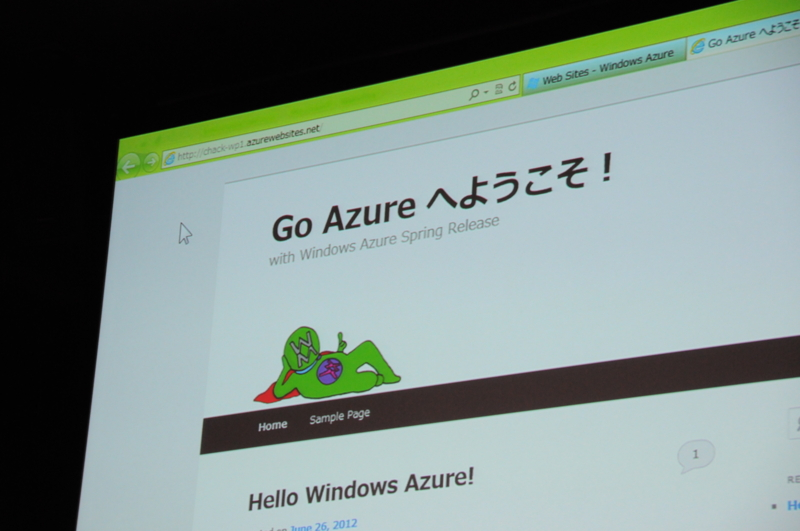
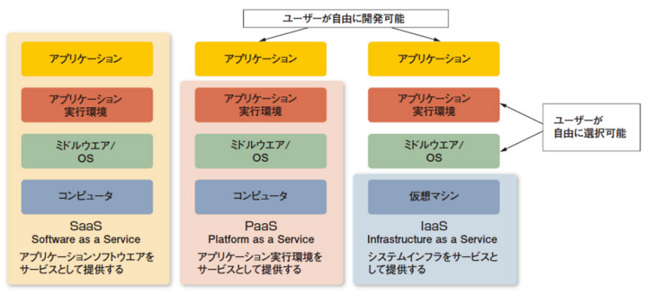
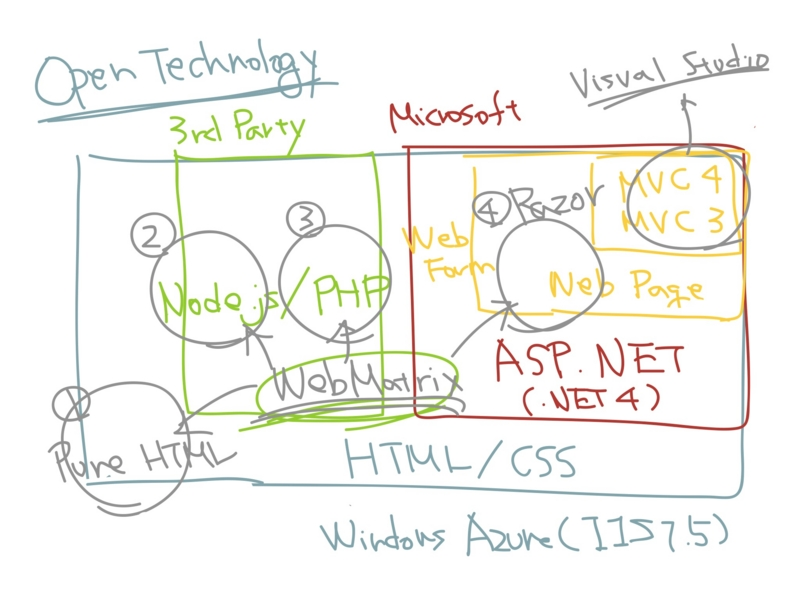

#GoAzure に行ってきました！
執筆日時：
Widows Azure ユーザー コミュニティ イベント “Go Azure” | MSDN 行ってきました！ 2日目はいろいろあって……行くつもりで家は出たけど、結局そのまま帰って自宅観戦しました。まぁ、会いたい人には昨日会えたし、オンライン参戦でもいいかなと。

よく考えたら、写真を使っていいのか聞くの忘れたんで*1、こっそり使っても大丈夫そうなのを1枚だけ掲げておきます。個人的なクライマックスもコレだったかな？（笑
今までやってみたいとは思っていたのだけど、なんとなく後回しになっていた Windows Azure ですが、「そろそろ本格的に始めるべきだなぁ」と思わせる内容でした。

（クラウド先進事例に見るPaaS/IaaSを選んだ理由 - 自前のアプリも動く「PaaS型」「IaaS型」躍進：ITpro より引用）
よくこの業界では SaaS / PaaS / IaaS というそうですけど（この言葉は昔勉強会で @normalian さんに教えてもらった気がします）、 Windows Azure では PaaS / IaaS という部分を扱うみたいですね。
- SaaS：Hotmail / SkyDrive / Office Web Apps など
- PaaS：Web サイト（HTML / ASP.NET / PHP / node.js）
- IaaS：Vertual Machine（Windows / Linux）
そのほかにも、 SQL データベース、仮想ネットワークなんてのもあるらしい。自社で管理しているサーバー（オンプレミス）と Windows Azure の境目がどんどんなくなって、違いは実体がどこにあるかというだけ。その点、攻殻機動隊みたいだなぁ、などというちょっと斜め上な感想も抱いたり。あとは人間がクラウドに行くだけだ！
それはともかく。
初心者やホビープログラマーにおすすめなのは、断然 Web サイト です。すでになじみのあるレンタルサーバーと使い勝手はほぼ一緒で、こと管理ポータルに至っては、それらよりもずっと使いやすい。バックボーンは Microsoft の仮想化技術なので、そんじゃそこらのホスティングサービスには負けない品質がある。そして、その利用をバックアップしてくれる素敵なツール「WebMatrix 2」がある。

先ほどの図の PaaS の「アプリケーション」のところを拡大し（てぐちゃぐちゃにし）たと思ってください。辛うじてわかるとおり、「WebMatxix 2」では、大きく分けて4つのテクノロジーが利用できる。
- Pure HTML
- Node.js
- PHP
- Razor
個人的に一番おすすめなのは Pure HTML または Razor （ASP.NET Web Pages）かな。 HTML5/CSS3（Pure HTML）で書くところからはじめて、変数とテンプレート、初歩的なデータベースが使いたくなれば Razor へ進めばいい。もっと大規模なWebサイトであれば、 ASP.NET MVC が利用できるけど、これはちょっと個人用途にはデカすぎる気がした*2。仮想化だのクラウドだのという言葉を忘れて、 HTML ファイルひとつ、ぽつんと Azure Web Sites に置くところから始めてもらえればと。
それでも足りない機能があるならば Vertual Machine で一から環境を作ることもできる。たとえば、今のところ Ruby on Rails は Web サイトで提供されていないけれど*3、Linux + Apache + Ruby + DB が使える Vertual Machine を Windows Azure 上に用意して80番ポートを開けてやれば*4使えるはず。まぁ、できるってだけで、一般的な利用であれば Web サイトで十分といった感じ。